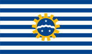
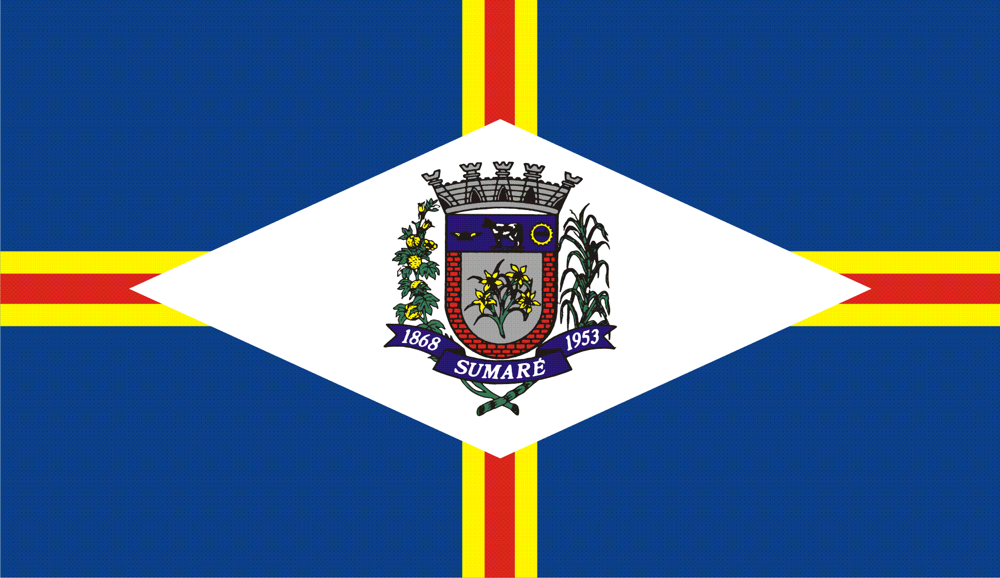
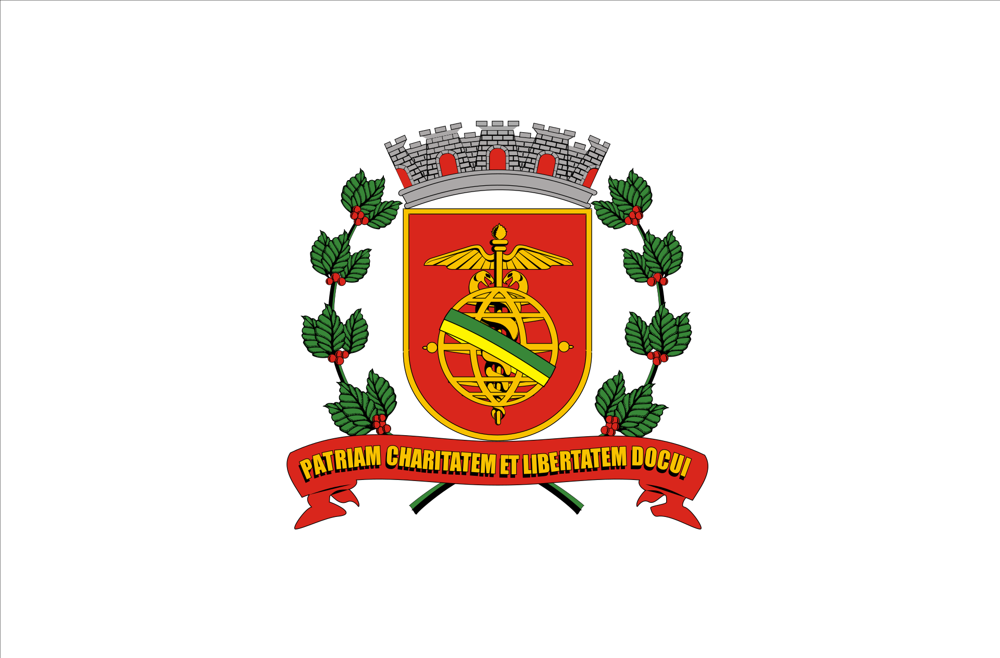
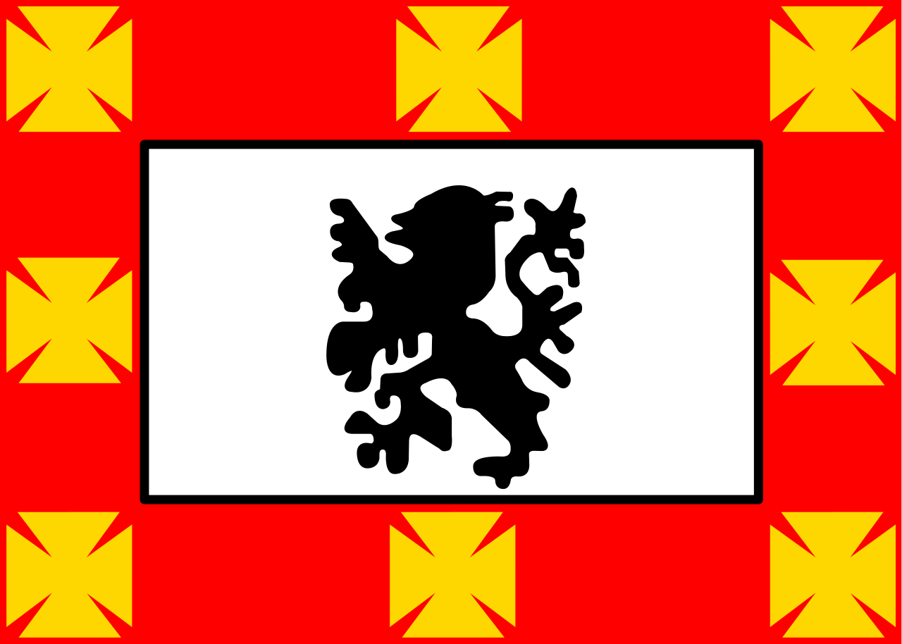
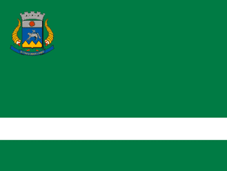
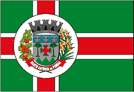

.png)
São Paulo é uma das 27 unidades federativas do Brasil. Está situado na Região Sudeste e tem por limites os estados de Minas Gerais a norte e nordeste, Paraná a sul, Rio de Janeiro a leste e Mato Grosso do Sul a oeste, além do Oceano Atlântico a sudeste. É dividido em 645 municípios e sua área total é de 248 222,362 km², o que equivale a 2,9% da superfície do Brasil, sendo pouco maior que o Reino Unido. Sua capital é o município de São Paulo e seu atual governador é João Doria.
Com 46,2 milhões de habitantes, ou cerca de 22% da população brasileira, é o estado mais populoso do Brasil, a terceira unidade política mais populosa da América do Sul (superado pela Colômbia e pelo restante da federação brasileira) e a subdivisão nacional mais populosa do continente americano. A população paulista é uma das mais diversificadas do país e descende principalmente de italianos, que começaram a emigrar para o país no fim do século XIX, de portugueses, que colonizaram o Brasil e instalaram os primeiros assentamentos europeus na região, de povos ameríndios nativos, de povos africanos e de migrantes de outras regiões do Brasil. Outras grandes correntes imigratórias, como de árabes, alemães, chineses, espanhóis e japoneses, também tiveram presença significativa na composição étnica da população local.
Confira aqui o hino do estado de São Paulo
Osasco é um município brasileiro localizado na Região Metropolitana de São Paulo, no estado de São Paulo, no Brasil. Nascido como um bairro da capital paulista no final do século XIX, tornou-se município emancipado após um plebiscito em 1962. Ocupa uma área de 64,954 km², e sua população estimada no ano de 2019 era de 698 418 habitantes, sendo o 8º mais populoso do estado de São Paulo
Possui importante atividade econômica nos setores industrial, comercial e de serviços. Conforme o censo do IBGE, com dados de 2017, Osasco possui o 6º maior Produto Interno Bruto do Brasil e o 2º maior do Estado de São Paulo, ficando à frente de muitas capitais estaduais brasileiras, como Salvador, Fortaleza e Recife, sendo a cidade não capital com o mais alto PIB da nação naquele ano.
O lema da cidade é Urbs labor, frase latina que significa Cidade trabalho, e seu padroeiro é Santo Antônio, sendo 13 de junho (data comemorativa do santo) feriado municipal.

Confira o hino da cidade
São Bernardo do Campo é um município brasileiro do estado de São Paulo, na Mesorregião Metropolitana de São Paulo e microrregião de São Paulo. Pertence a Zona Sudeste da Grande São Paulo, em conformidade com a lei estadual nº 1.139, de 16 de junho de 2011 e, consequentemente, com o Plano de Desenvolvimento Urbano Integrado da Região Metropolitana de São Paulo (PDUI),e também à região não-oficial do Grande ABC.
A área total do município é de 409,88 km² e sua população de acordo com estimativas do Instituto Brasileiro de Geografia e Estatística (IBGE) de 2018, é de 833 240 habitantes, o que resulta em uma densidade demográfica de 2024,33 hab/km². O município é formado pela sede e pelo distrito de Riacho Grande.
A origem da cidade remonta a 1553, quando é oficializada a Vila de Santo André da Borda do Campo, fundada pelo português João Ramalho, junto a seu sogro Tibiriçá. A Vila foi o primeiro núcleo de povoamento do território brasileiro fora do litoral. O nome do município provém da Fazenda de São Bernardo, fundada pelos monges beneditinos em 1717, origem da ocupação moderna da cidade.

Confira o hino da cidade
São José dos Campos é um município brasileiro no interior do estado de São Paulo. Está situado no Vale do Paraíba Paulista, a leste da capital do estado, distando desta cerca de 81 km. É sede da Região Metropolitana do Vale do Paraíba e Litoral Norte e ocupa uma área de 1 099,409km², da qual 353,9 km² estão em perímetro urbano. Em 2020, sua população foi estimada pelo IBGE em 729 737 habitantes, sendo o quinto mais populoso de São Paulo e o 23.º de todo o país, além de ser o segundo município mais populoso do interior do Brasil, ficando atrás somente de Campinas. O município está integrado — junto com as regiões metropolitanas de São Paulo, Campinas, Sorocaba e Baixada Santista — ao Complexo Metropolitano Expandido, uma megalópole que ultrapassa os trinta milhões de habitantes (cerca 75% da população paulista) e que é a primeira aglomeração urbana do tipo no hemisfério sul.
São José dos Campos foi elevado à categoria de vila em 1767. No decorrer do século XIX a agricultura desenvolveu-se no município, com destaque para o café, principalmente a partir da década de 1880. Porém na segunda metade do século XX a indústria ganhou força, sendo este o momento que a cidade descobre sua vocação para a área da tecnologia.
município é a sede de importantes empresas, como: Panasonic, Johnson & Johnson, Ericsson, Philips, Ball Corporation, General Motors (GM), Petrobras, Monsanto, Embraer (sede), entre outras. Possui também relevantes centros de ensino e pesquisas, tais como: o DCTA, o INPE, o Cemaden, o IEAv, o IAE, o IFI, a UNESP, o ITA, a FATEC, a UNIVAP, a Anhanguera, o IP&D e a UNIFESP, sendo um importante tecnopolo de material bélico, metalúrgico e sede do maior complexo aeroespacial da América Latina. O Parque Tecnológico de São José dos Campos, o maior do tipo no país, sedia unidades de pesquisa de grandes empresas, sendo a única cidade do mundo com centros de pesquisas das três maiores fabricantes mundiais de aeronaves, a Embraer, a Boeing e a Airbus.
Confira o hino da cidade
Sumaré é um município brasileiro do estado de São Paulo. Localiza-se a 22º49'19" de latitude sul e 47º16'01" de longitude oeste, a uma altitude de 583 metros. Sua população estimada pelo IBGE em 2020 foi de 286.211 habitantes. Ocupa uma área de 153,465 km². A cidade é a segunda maior da Região Metropolitana de Campinas, ficando atrás apenas de Campinas. O município é formado pela sede e pelo distrito de Nova Veneza.
O município serviu de inspiração para a ambientação do jogo eletrônico, ainda em desenvolvimento, 171, que se passará na fictícia "Sumariti".
Nesciunt veritatis provident, exercitationem porro, consectetur mollitia ad perferendis corporis blanditiis earum non numquam quos eum cupiditate voluptates sint distinctio quaerat, eius neque voluptas ipsam eaque labore iste. Provident, ipsum?
Natus quisquam asperiores, quo enim beatae doloribus necessitatibus. Sit, maxime. Minima consequuntur ab adipisci. Eaque doloremque ad nostrum sunt tempore ipsam labore reiciendis similique, assumenda deserunt aperiam numquam, nisi voluptate?
Confia o hino da cidade
São José do Rio Preto é um município brasileiro localizado no interior do estado de São Paulo. É uma das 36 cidades que formam a Região Imediata de São José do Rio Preto, a mais populosa das seis Regiões Imediatas que integram a Região Intermediária de São José do Rio Preto. Ao todo, a Região Intermediária é formada por cem cidades, das quais São José do Rio Preto é a mais populosa, sendo a cidade-sede da Região.
São José do Rio Preto localiza-se a noroeste da capital do estado, distando desta cerca de 442 km. Ocupa uma área de 431,944 km², ocupando a 199.ª posição no estado. A população estimada para 1.º de julho de 2020, segundo o Instituto Brasileiro de Geografia e Estatística, era de 464 983 habitantes, sendo o décimo primeiro mais populoso de São Paulo e o 52º do país.
Emancipado de Jaboticabal na década de 1850, o nome do município é uma mistura entre o padroeiro, São José, e o Rio Preto, rio que banha o município. Hoje, é formada pelos distritos de Engenheiro Schmitt, São José do Rio Preto (Distrito-Sede) e Talhado, e subdivide-se em cerca de 360 bairros, loteamentos e residenciais. É um dos principais polos industriais, culturais e de serviços do interior de São Paulo. Sua história econômica esteve por muito tempo ligada à cafeicultura, também presente em grande parte do estado de São Paulo, principalmente no início do século XX. Segundo pesquisa da Fundação Getúlio Vargas, publicada na revista Você S.A., São José do Rio Preto é a 18ª colocada no ranking das cidades brasileiras mais promissoras para se construir uma carreira profissional. A Firjan classificou a cidade como a 2ª mais desenvolvida do país.

Confira o hino da cidade
Santos é um município portuário sede da Região Metropolitana da Baixada Santista, localizado no litoral do estado de São Paulo, no Brasil. Com a maior participação econômica da citada região, abriga o maior porto da América Latina, o principal responsável pela dinâmica econômica da cidade ao lado do turismo, da pesca e do comércio, ocupando a 5ª colocação entre as não capitais mais importantes para a economia brasileira e 10ª colocada segundo a qualidade de vida. A cidade é sede do poder executivo paulista todo dia 13 de junho (capital simbólica de São Paulo) e não apenas sede de diversas instituições de ensino superior como também da mais antiga entidade geral estudantil do Brasil, o Centro dos Estudantes de Santos.
Santos possui uma economia crescente. Em 2016, a cidade era a 33ª mais rica do país, com produto interno bruto de 21 954 556,74 de reais. Durante um bom tempo, sua economia centrou-se na comercialização do café; em 1922 foi inaugurada a Bolsa Oficial do Café, onde eram negociadas riquezas do mercado cafeeiro para o país, e que resultou no atual Museu do Café abrigado no local atualmente conhecido como Centro Histórico, espaço que promove exposições sobre a trajetória do produto pelo Brasil e pela cidade e que é decorado com obras do artista Benedito Calixto.
Maior cidade do litoral paulista, o principal cartão-postal do município são os 7 km de praia. O Livro dos Recordes situa os jardins da orla de Santos como formadores do maior jardim frontal de praia em extensão do mundo. A preservação e o cuidado com a flora do ambiente praiano santista, permeado de palmeiras e amendoeiras, são resultados de um trabalho em conjunto dos departamentos de meio ambiente da região, muitas vezes ligados a universidades ou a instituições científicas. A estimativa de população em 2020 era de 433 656 habitantes. A Baixada Santista, com 1,7 milhão de habitantes em 2008, é parte — junto com a Grande São Paulo e a Região Metropolitana de Campinas — do Complexo Metropolitano Expandido, uma megalópole que ultrapassava, já naquele ano, os 30 milhões de habitantes (cerca 75% da população paulista) e que é a primeira aglomeração urbana do tipo no hemisfério sul.
Confira o hino da cidade
São Vicente é um município da Microrregião de Santos, na Região Metropolitana da Baixada Santista, no estado de São Paulo, no Brasil. A sua população estimada pelo Instituto Brasileiro de Geografia e Estatística para 2020 era de 368.355 habitantes, sendo a segunda cidade mais populosa do litoral paulista, ficando atrás apenas de Santos. A sua área é de 148,424 km², o que resulta numa densidade demográfica de 2 378,59 habitantes por quilômetro quadrado.
Surgida no ano de 1532, foi a primeira vila da América Portuguesa, fundada por Martim Afonso de Sousa conforme ordens do rei de Portugal, dom João III, em uma ilha descoberta na expedição de Gaspar de Lemos, em 1502, que a batizou em homenagem a São Vicente Mártir (de acordo com registros de Américo Vespúcio). Em 22 de agosto de 1532, ocorreu a primeira eleição da América, em que foram escolhidos os primeiros oficiais da Câmara, atualmente equivalente ao cargo de vereador. Hoje, a cidade, situada na metade ocidental da Ilha de São Vicente, que compartilha com Santos, baseia a sua economia no comércio e turismo.
Parte do município se estende pelo continente, em duas porções distintas: o bairro de Japuí, ligado à cidade por uma ponte construída em 1914 pelo engenheiro Saturnino de Brito no caminho que ruma à Praia Grande, e o distrito de Samaritá, que inclui também os bairros do Humaitá, Parque Continental, Parque das Bandeiras, Jardim Rio Branco, Samaritá, Vila Nova São Vicente, Vila Ema e o Quarentenário, situados ao longo da Rodovia Padre Manoel da Nóbrega, entre Cubatão, Praia Grande e os contrafortes da Serra do Mar.
Confira o hino
São João da Boa Vista é um município brasileiro do estado de São Paulo. Localiza-se na região Centro-Leste do estado a uma latitude 21º58 '09" sul e a uma longitude 46º47'53 " oeste, estando a uma altitude de 767 metros. Segundo a estimativa do IBGE de 2017, São João da Boa Vista tinha uma população de 90.089 habitantes e seu IDH é de 0,797, considerado o 28º melhor do estado de São Paulo.
Confira o hino
Santana de Parnaíba é um município do estado de São Paulo, localizado na Zona Oeste da Região Metropolitana de São Paulo, em conformidade com a lei estadual nº 1.139, de 16 de junho de 2011 e consequente Plano de Desenvolvimento Urbano Integrado da Região Metropolitana de São Paulo (PDUI)

Confira o hino da cidade
Santo Antônio do Pinhal é um município brasileiro do estado de São Paulo, na Região Metropolitana do Vale do Paraíba e Litoral Norte, Sub-Região 2-Taubaté microrregião de Campos do Jordão. Localiza-se a uma latitude 22º49'38" sul e a uma longitude 45º39 '45" oeste, estando a uma altitude de 1.080 metros. Sua população estimada para 2019 era de 6 811 habitantes.
Santo Antônio do Pinhal foi elevado a freguesia pela lei número: 2 de 23 de março de 1861 pelo presidente da província de São Paulo, Antônio José Henriques. Ficaram fazendo parte da nova freguesia as fazendas de Manoel Antonio dos Santos, Francisca de Paula Oliveira Godoy e Gregorio José de Oliveira Costa.
Confira o hino da cidade